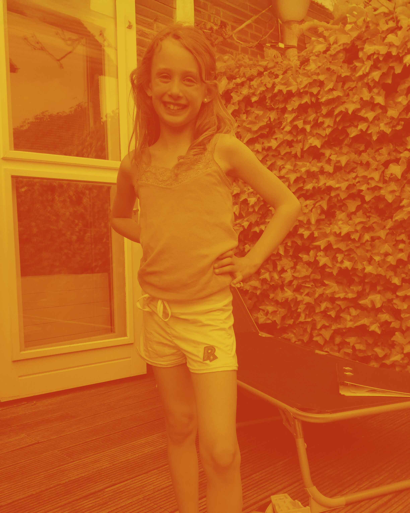
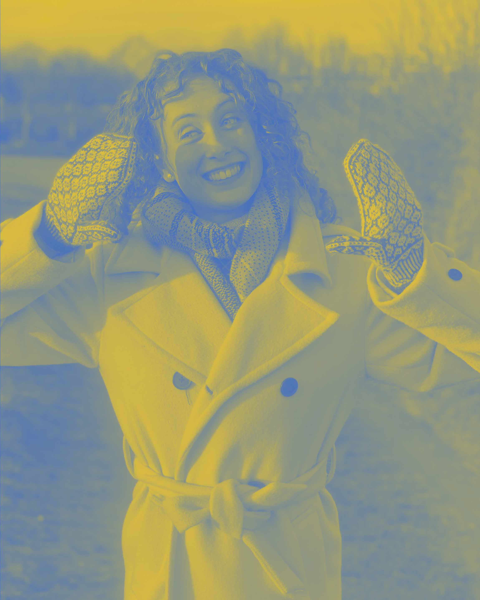
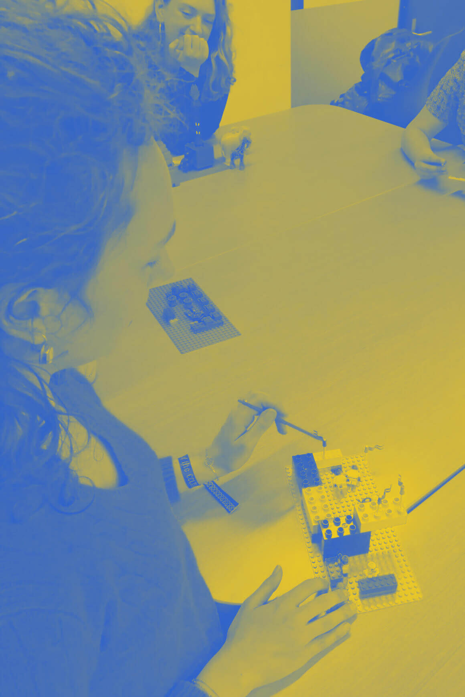

2023 - 2027
I've been creative for as long as I can remember—drawing, coloring, looming, sewing. When my father started a photography course during my early high school years and Photoshop appeared on his laptop, I was immediately intrigued. I followed YouTube tutorials on photo editing and started taking pictures of animals, even creating a book filled with dog portraits. This passion led me to study photography as my first major. During that program, we also had courses in Graphic Design and 3D, and I quickly realized that I enjoyed those even more than photography. That’s when I decided to switch to Communication and Multimedia Design (CMD). In my free time, I love knitting. It’s a slow craft, and I enjoy immersing myself in something that takes time to create.


Look at more creative work

Lego serious Play
As a Communication and Multimedia Design student, my education started wide and open. In the first
year we explored a bit of everything: coding, graphic design, storytelling, photography, film, and
more.
After that, we get to choose our own direction. Everyone picks different subjects, so every CMD
student ends up with a different mix of skills and interests. I’m most drawn to creating experiences
and interactions. To go deeper into that, I went to Sweden for half a year to take a course in
Interaction Design.
Over the years I’ve learned many different skills and theories. I work with Adobe software and
Figma, and I build with HTML and CSS. I’ve prototyped with my hands and with an Arduino.
During my internship, I learned to work with different brands, to design within an existing design
system, and to design new ones.
Just as
important, I’ve learned design theory: how design shapes the way people move through the world, and
the responsibility that comes with making those choices.
During my internship, I became acquainted with working within a professional design studio and contributed to various design challenges.
I was responsible for the promotion of a student dance association with over 350 members. My responsibilities included creating social media content, posters, and event photography.
In de Makerspace hielp ik studenten bij het maken van hun projecten. Ik begeleidde hen bij het werken met machines zoals de 3D-printer en lasercutter.
I took spontaneous portraits of families, couples, and friends. I learned to put people at ease in front of the camera while simultaneously taking high-quality photos quickly.
I am a dreamer, always have been, always will be. And my mind is crowded with wishes.
At the supermarket, when I’m working, I find myself hoping for something so simple: that the self-scan
terminal could welcome everyone, even someone in a wheelchair. So that the man who comes in so often
wouldn’t have to fight the world just to buy his groceries.
Online, I wish the same kind of kindness existed. I wish websites spoke more clearly. So I can
understand them, and so my grandmother, who would definitely get lost.
I dream of museums that do more than pin black text on a white wall. Places that invite you in, that
make stories breathe and wonder feel close.
And I dream wider than that. I dream of a greener planet, where we make less waste and give more things
a second life through recycling. I dream of better education, where children learn about the earth and
its nature, where they grow curious about the world itself, not only the glow of their phones.
Like I said: I’m a big dreamer.